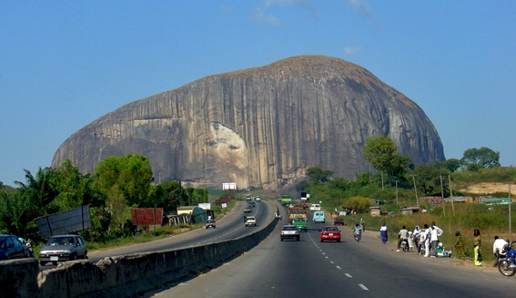

SULEJA

Suleja is a city in Niger State, Nigeria, pop. (2006) local government area, 216,578, just north of Abuja, capital of the Suleja Emirate. It is sometimes confused with the nearby city of Abuja, due to its proximity, and the fact that it was originally called Abuja before the Nigerian government adopted the name from the then Emir Sulayman Barau for its new federal capital in 1976.
It was established in the early 19th century by Mohammed Makau, the last Hausa emir of Zaria and his followers who were fleeing the Fulani jihadists engaged in the conquest of northern Nigeria. Zaria, or Zazzau, was one of the Hausa city/states of Northern Nigeria which were being conquered by the Fulani jihadists under their charismatic Sheik, Usman bin Fodio.
Apart from its closeness to the Nigerian federal capital, it is also recognised as a centre of excellence for traditional West African pottery, namely the world-famous Ladi Kwali Pottery Centre, established by Michael Cardew in 1950[citation needed]. The leading exponent of this school of pottery was Dr. Ladi Kwali, who received worldwide acclaim for her works, the originals of which are on display worldwide.
Economy
Discoveries of ancient sculptures of the Nok culture, both at Suleja town and in the Makabolo River bed, have helped prove the influence of Nok on the Yoruba art of Ife. Today Suleja is well known as an exporter of Gbari pottery. Cotton weaving and dyeing, with locally grown indigo, and mat making are traditional activities, but farming remains the chief occupation. Local trade is primarily in agricultural products. In addition to the Pottery Centre, a government secondary school and a hospital are located in the town. The Dorben Polytechnic has a campus in Suleja.
History
The emirate’s wooded savanna area of about 2,980 square kilometres (1,150 sq mi) originally included four small Koro chiefdoms that paid tribute to the Hausa kingdom of Zazzau. After warriors of the Fulani jihad (holy war) captured Zaria (Zazzau’s capital, 220 km (140 mi) north-northeast) about 1804, Muhamman Makau, sarkin ("king of") Zazzau, led many of the Hausa nobility to the Koro town of Zuba (10 km or 6 mi south). Abu Ja (Jatau), his brother and successor as sarkin Zazzau, founded Abuja town in 1828, began construction of its wall a year later, and proclaimed himself the first emir of Abuja.
Withstanding Zaria attacks, the Abuja emirate remained an independent Hausa refuge. Trade with the Fulani emirates of Bida (to the west) and Zaria began in Emir Abu Kwaka’s reign (1851–77), but, when Abuja’s leaders disrupted the trade route between Lokoja (160 km or 99 mi south-southeast) and Zaria in 1902, the British occupied the town. Alluvial tin mining began in Emir Musa Angulu’s reign (1917–44).